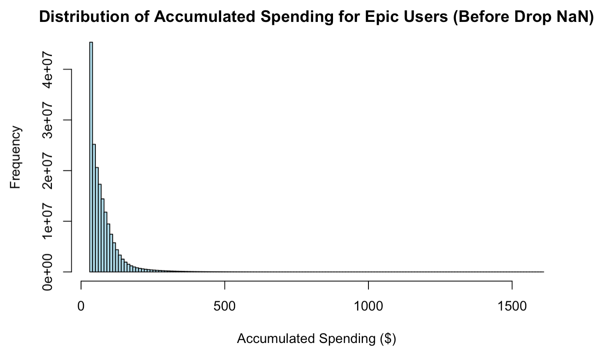
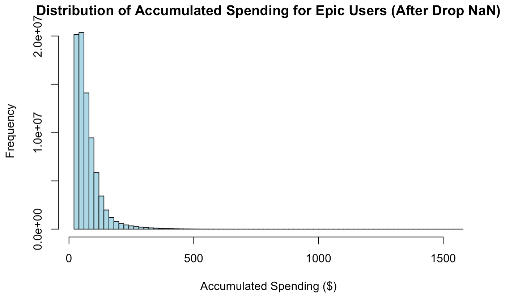
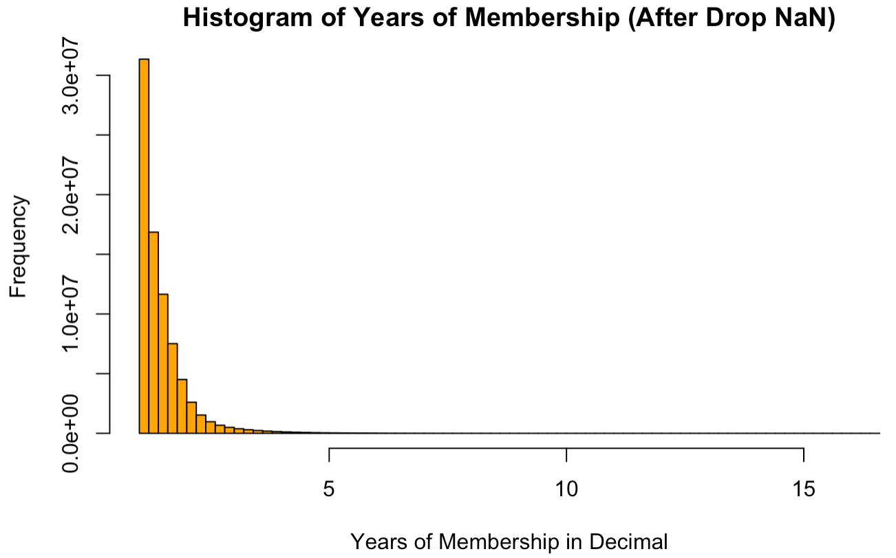
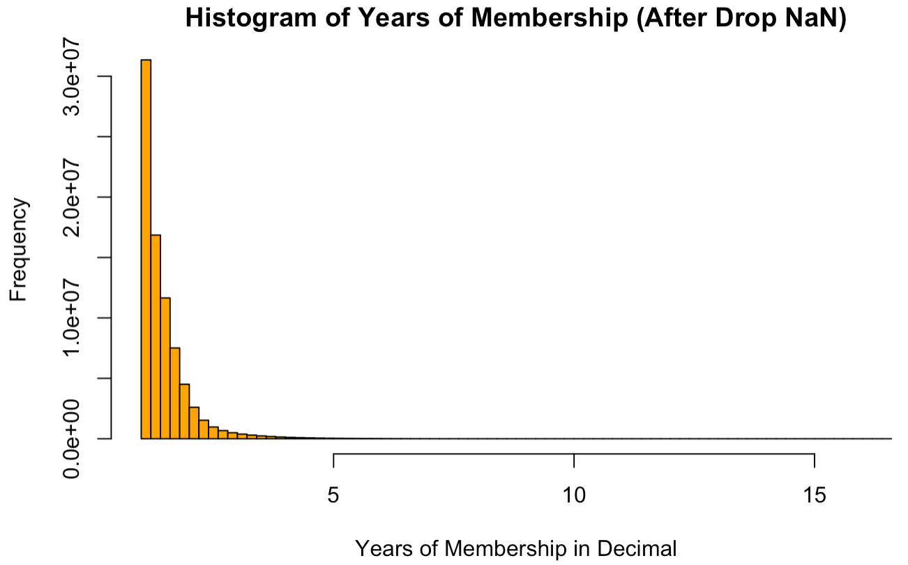

- Although there was evidence suggesting that the missing values in our dataset exhibited Missing Completely At Random (MCAR) properties, it's possible that these NaNs could be Not Missing At Random (NMAR), particularly related to age, potentially introducing bias. For instance, users under 18 might choose not to disclose their ages to access age-restricted games.
- Utilizing Nvidia RAPIDS services enabled us to process the extensive dataset comprising millions of users efficiently. However, to conserve computational resources, we significantly downsampled the data from the original full dataset. This approach might lead to some sampling bias or reduced generalization performance.
- Our complex models, including MLP, GCN, and various ensembles, produced commendable predictive outcomes. However, their limited interpretability poses challenges, particularly when presenting our research to upper management or clients who may not have a technical background.
- It's important to note that the best RMSE does not always equate to the most effective recommendations. Thus, integrating human oversight and quality checks in the system is essential, regardless of its computational performance.
- Adomavicius, Gediminas; Tuzhilin, Alexander (2015). Ricci, Francesco; Rokach, Lior; Shapira, Bracha (eds.). Recommender Systems Handbook. Springer US. pp. 191–226. doi:10.1007/978-1-4899-7637-6_6. ISBN 9781489976369.
- Enders, Craig K. (2010), Applied Missing Data Analysis, Guilford Press.
- Haykin, Simon (1998). Neural Networks: A Comprehensive Foundation(2 ed.). Prentice Hall. ISBN 0-13-273350-1.
- Kipf, T. N., & Welling, M. (2016). Semi-Supervised Classification with Graph Convolutional Networks. arXiv preprint arXiv:1609.02907.
- Lin, Yi; Jeon, Yongho (2006). "Random forests and adaptive nearest neighbors". Journal of the American Statistical Association. 101 (474): 578–590. CiteSeerX 10.1.1.153.9168.
- Samworth, Richard J. (2012). "Optimal weighted nearest neighbour classifiers". Annals of Statistics. 40 (5): 2733–2763. arXiv:1101.5783. doi:10.1214/12-AOS1049. S2CID 88511688.
Executive Summary
This comprehensive research project leveraged the extensive, private dataset from Epic Games, encompassing data from over 180 million users and more than 900 games. It addressed the challenge of missing age data in user profiles, crucial for regulatory compliance and market segmentation. Utilizing advanced machine learning techniques, the project successfully predicted user ages by categorizing them into distinct age groups and adopting a down-sampling strategy for efficient data handling. The Multi-layer Perceptron (MLP) models initially used were later enhanced with Graph Convolutional Networks (GCN) to better capture user-user relationships, achieving superior performance in age prediction. Additionally, based on the re-constructed graph data, we developed sophisticated models for predicting user game ratings using K-Nearest Neighbors (KNN) and Random Forest (RF) techniques, further refined with ensemble strategies. Finally, a hybrid game recommendation system was implemented, combining collaborative and content-based filtering methods, creating a personalized user experience on Epic Games' platform. This system not only improved user engagement but also provided strategic insights for future business and marketing initiatives.
Data and Exploratory Data Analysis
The proprietary database of Epic Games, containing confidential data, encompasses a vast array of unstructured user data (covering over 180 million users) and structured data pertaining to each game (encompassing more than 900 titles). The user-specific data includes elements such as user ID, gender, game ratings, reviews, age, total expenditure at Epic, and duration of membership, among others. Similarly, the game-related data comprises information like game titles, developers, release dates, genres, and average ratings.
A significant challenge with the user data is the prevalence of missing age information, with over 60% of users lacking this detail (noted as NaN). The age factor is crucial for Epic Games to comply with regulations concerning minors (under 18 years of age), especially since numerous games have age restrictions for players above 17 or 18. Furthermore, the age data is a valuable metric for predicting individual user revenue for Epic Games. Considering the vast size of our original dataset, eliminating users with missing age data still leaves us with a substantial volume of 80 million users. However, a thorough investigation is required to assess the impact and validity of excluding all users with unspecified age data.
We conducted a comparative analysis of the distribution of two key numerical variables in the user data – accumulated spending at Epic and the duration of membership with Epic – before and after the exclusion of missing values (NaNs). The analysis, as illustrated in the four figures below, reveals that the distributions of these variables retain their strictly left-skewed character even after the removal of NaNs. This observation suggests that the absence of age data does not follow a discernible pattern or reason. Consequently, we have grounds to hypothesize that the missing age data is likely Missing Completely At Random (MCAR), indicating that the absence of this data is not tied to any underlying bias.
-


 

Another issue we faced was the imbalance in age data, with the majority of users falling between 15 and 50 years old, and only a minimal number of users under 15 or over 50. To address this for internal compliance and to lay the groundwork for Epic's future initiatives, we framed the problem as a multi-class classification challenge. This approach was aimed at mitigating the imbalance. We categorized users into three groups: 'Minors' (younger than 18 years) were assigned ordinal encoding 0, 'Adults' (aged 18 to 39) received ordinal encoding 1, and 'Middle-Aged' users (over 39 years) were given ordinal encoding 2. To optimize computational resources, we employed a down-sampling strategy, selecting 1 million samples from the dataset that had complete age information. These samples were then transformed from unstructured to structured data frames, incorporating additional processes such as normalization and average aggregation to represent each user’s game rating.
MLP & GCN Modeling
With the technical support provided by Epic Games, we successfully utilized the Nvidia RAPIDS service, enhanced by A100 GPU acceleration, to train basic Multi-layer Perceptron (MLP) models. These initial models were equipped with softmax activation functions and L2 regularization. Our testing process was thorough, involving 200 epochs, an 80:20 ratio for train-test splitting, a finely-tuned learning rate hyper-parameter, and cross-validation. The below table is the summary of the test results:
The test results indicated a clear trend: as we increased the number of layers in the models, they exhibited a greater propensity for overfitting. This was evident in the consistent test F1 scores, which remained around 0.86. This observation underscores the need for a careful balance between model complexity and its predictive performance.
To enhance our results, I suggested incorporating the relationships between similar users as an additional layer of information for our age prediction task. We hypothesized that if two users highly favor the same game, this shared preference could be a valuable indicator for predicting one user’s age based on the other's. To facilitate this, we downsampled our data, selecting a random subset of 60,000 users to optimize efficiency. This subset was then organized into a graph structure, where each user was represented as a node, with age, game ratings, and other variables as node attributes. Connections between users (user-user edges) were established when both had rated the same game with a score of 3.5 or higher. This resulted in over 500,000 edges. This network of information was then represented in a large adjacency matrix, setting the stage for the application of Graph Convolutional Networks (GCN) models to predict user ages. The figure below illustrates the fundamental structure of this graph data:
We then implemented normalization and average aggregation methods to represent game ratings per user within the node attributes. The GCN models were carefully designed, incorporating various layers, ReLU activation functions, different node embedding sizes, and a final softmax classification layer tailored for age prediction. For effective model training, we employed the cross-entropy loss function formulti-class classification, along with the Adam optimizer. The GCN models were trained using an 80:20 train-test split, with a meticulously tuned learning rate hyper-parameter and cross-validation to ensure robustness and accuracy in our predictions.
From the figure presented above, it becomes evident that the Graph Convolutional Networks (GCN) models, even with a considerably smaller dataset, outperformed the Multi-layer Perceptron (MLP) models. This superior performance can be attributed to their ability to capture additional user-user relationships. Specifically, a GCN model with just 2 layers and a node embedding size of 25 achieved an impressive F1 test score of 0.91. It was observed, however, that more complex GCN models tended to overfit in this scenario.
Ensemble of KNN and RF Modeling
Expanding on our existing graph data structure, our aim was to further explore user ratings for previously unrated games. We initially utilized the K-Nearest Neighbors (KNN) model as our baseline, with the hyper-parameter k optimally tuned to 8 through randomized search, resulting in a test Root Mean Squared Error (RMSE) of 1.03. To enhance performance, we incorporated the Random Forest (RF) model, finely tuning its hyper-parameters to n_estimators = 200 and max_depth = 20, again determined through randomized search, to prevent overfitting. We then employed various ensemble techniques, combining the strengths of the KNN and RF models using average, weighted average, and stacking strategies. The most successful of these was the stacking ensemble approach, which achieved a significantly improved test RMSE of 0.87. The subsequent figure provides a comprehensive summary of the results from five different predictive models we deployed for assessing user game ratings:
Based on the outcomes, we gathered evidence suggesting that both the KNN and RF models capture distinct patterns in rating prediction. These complementary relationships between the two models appear beneficial, potentially reducing errors when their predictions are combined. This synergy underscores the value of integrating different modeling approaches for more accurate results.
Game Recommendation System
Additionally, our project set out to develop a straightforward game recommendation system tailored for individual users. Initially, we focused on traditional methodologies. Utilizing a sparse utility matrix comprising data from 1 million users and over 900 games, we began with the collaborative filtering method. This approach primarily considered observed user ratings, aggregating them into a comprehensive measure. We applied the below summed Singular Value Decomposition (SVD) loss function, enhanced with L2 regularization, to refine our recommendation model:
After fine-tuning the hyper-parameter k to 14, we achieved an optimal test RMSE of 1.28. We then enhanced our approach by integrating more detailed information about users and games from our original databases, utilizing a content-based filtering method. This involved building a unique regression model for each user, learning regression weights based on their interactions with games in Epic, including the games they played, their ratings for these games, and the characteristics of both the games and the users. Subsequently, we developed a hybrid model that combines the best aspects of both collaborative and content-based filtering. This model was trained over 200 epochs with a 20:80 weighted average. The most effective hybrid model achieved a remarkable RMSE of 0.86. Below, we have provided a summary of these results:
Leveraging our ensemble and hybrid models, we successfully created a comprehensive recommendation page for gamers. This page features the top three new games, ranked by the highest predicted ratings, while ensuring previously rated games by the user are excluded. Below is a screenshot of this recommendation page, personalized according to my own profile and the game ratings I have provided on Epic: